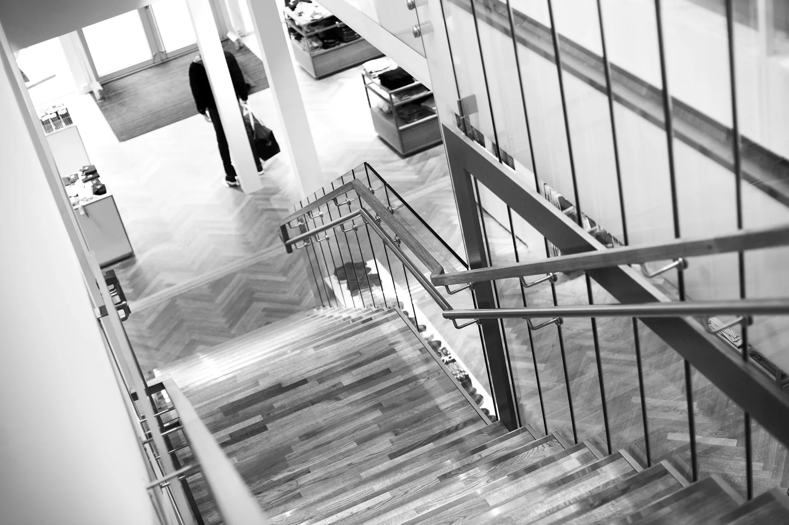
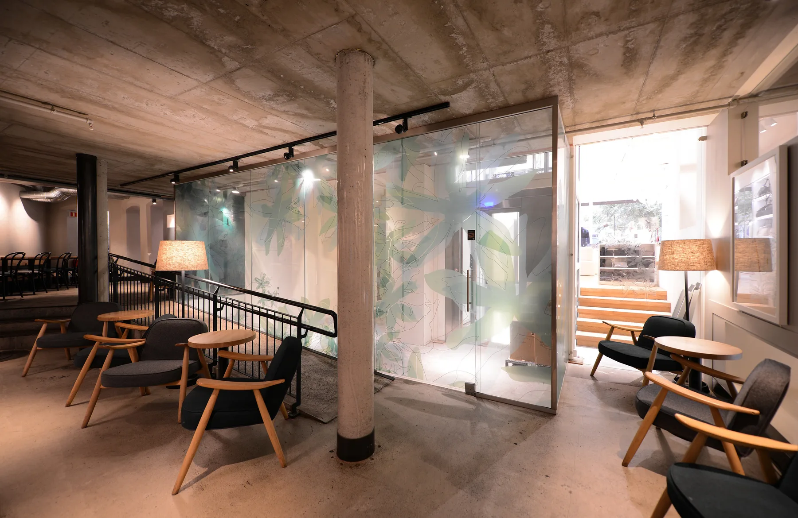
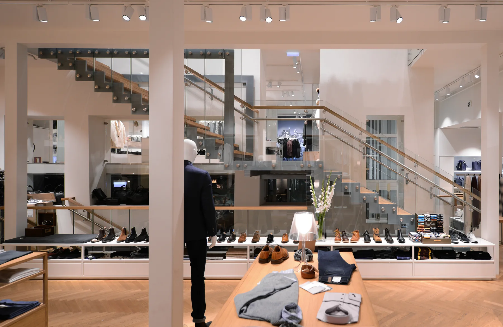
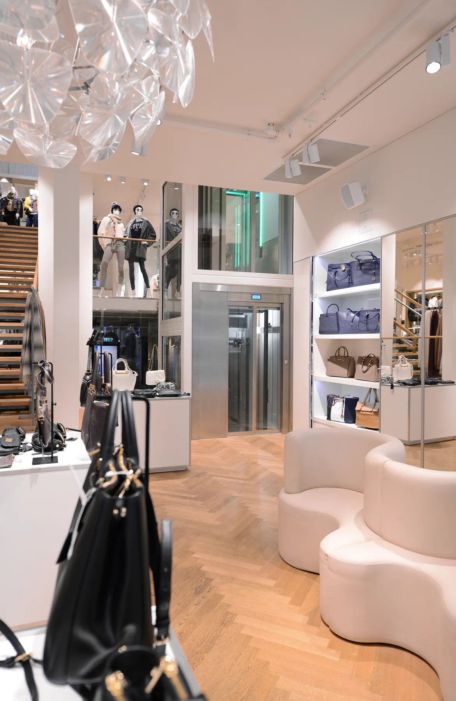
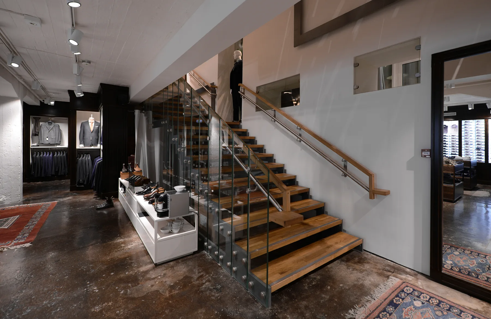
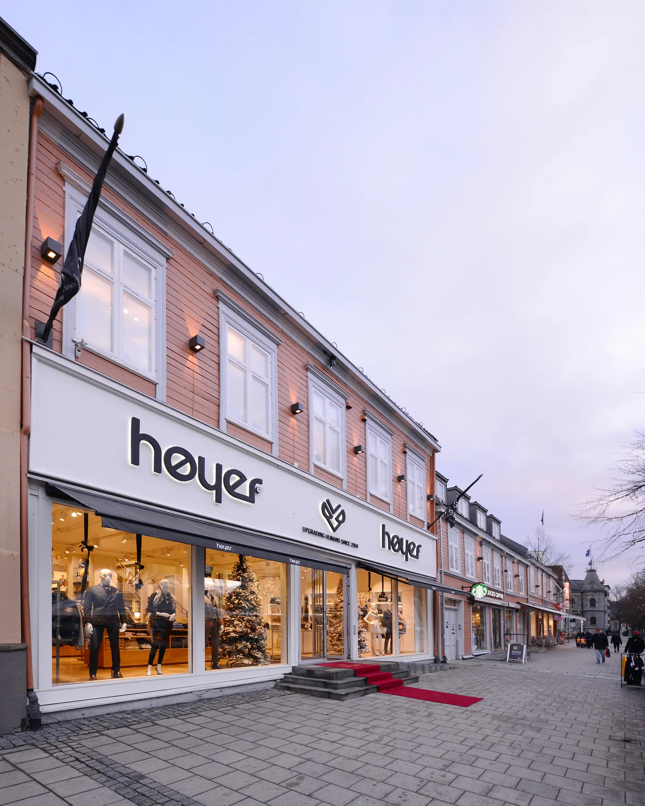
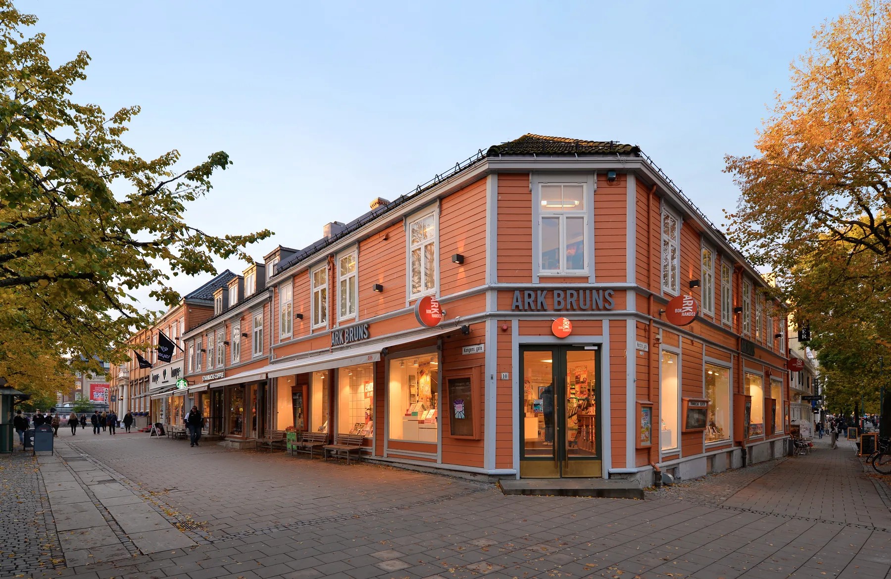

Kongens gt. 10, 12 og 14
43Bygårder
Næring · kontor · Ombruk · transformasjon · Nybygg · AntikvariskSe bildegalleri

- Byggherre
- F Brun Eiendom AS
- Byggeår
- Fase 1: 2001-2004/Fase 2: 2009-2014
- Medarbeidere
- Ingvild Edelsteen Kjær, Bodil Angard Rian, Iver Berg Blomsøy, Gunnar Stenberg, Svein Øvsthus
Om prosjektet
Tre historiske bygårder i Kongens gate er ombygget og teknisk oppgradert. Arbeidet håndterer bygningenes ulike alder og antikvariske kvaliteter innenfor Trondheims historiske bykjerne.
Bilder & tegninger7 bilder



Forstørr

Forstørr

Forstørr

Forstørr

Forstørr

ForstørrLa oss begynne med en samtale